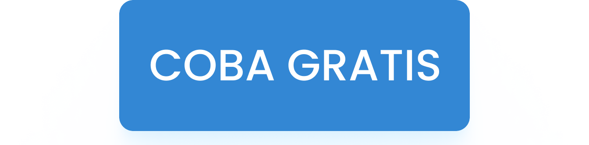
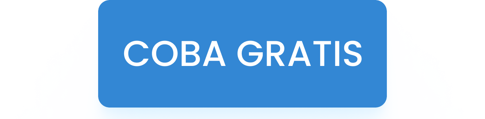

Lebih banyak fitur. Kelola data dengan fitur yang beragam
CEKLOK memberikan beragam fitur-fitur yang lengkap sesuai dengan kebutuhan Anda. Sistem yang sudah dijamin oleh beberapa perusahaan.


CEKLOK memberikan beragam fitur-fitur yang lengkap sesuai dengan kebutuhan Anda. Sistem yang sudah dijamin oleh beberapa perusahaan.


Tambah jadwal jam kerja pegawai dari waktu datang, pulang hingga jam lembur
Lacak kehadiran pegawai dimanapun dan kapanpun tanpa batasan waktu